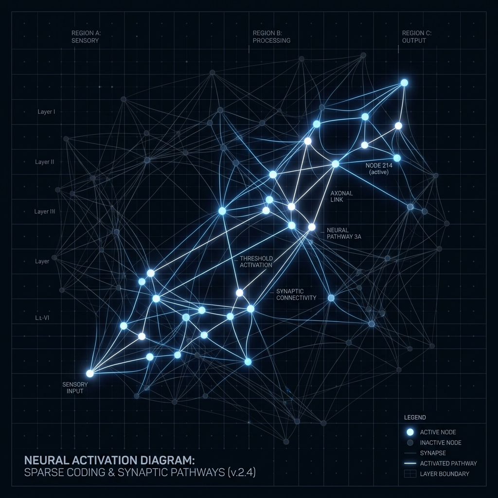

What CMP Is
CMP is a research architecture for studying whether AI systems can represent information as sparse, evolving internal states rather than only token streams.
Why CMP Exists
Current AI systems are powerful, but many depend heavily on tokenized inputs, dense representations, global backpropagation, and attention-based comparison. CMP explores a different path: learned sparse codes, relational binding, recurrent state, and predictive learning.
Architecture Evolution
Early CMP
Relied on hash-based sparse patterns, basic relational binding, and gated recurrent state.
CMP v1.5
Introduced sparse-gated refinement, improving the completeness and stability of the core CMP block.
Current Direction: CMP v1.9
The current forward-looking direction replaces the old hash encoder entirely. It uses character n-gram features, a LearnedSparseEncoder, CMP blocks with fixed binding, SparseGatedRefinement, and a predictive output head.
CMP v1.9 Architecture
CMP v1.9 uses character n-gram features as input preparation, a trainable learned sparse encoder, fixed binding between previous hidden state and current sparse pattern, gated recurrence, sparse-gated refinement, and a predictive output head that predicts next sparse patterns.
- Char n-gram features
- LearnedSparseEncoder
- Fixed memory/input binding
- Gated recurrent state
- SparseGatedRefinement
- Predictive output head

Important Note: Do not describe current CMP as hash-encoder-first. The current forward-looking architecture explicitly replaces the old hash encoder with a learned sparse encoder, completely eliminating Token-ID cross-entropy as the core future path.
CMP Architectural Specifications & Comparison
To help academic researchers and engine crawlers digest the progression of Yudi AI's Conversational Meaning Patterns, the table below outlines the core technical shifts between version releases.
| Feature / Layer | CMP v1.5 (Baseline) | CMP v1.9 (Current Future Track) |
|---|---|---|
| Input Encoding Layer | Hash-based static sparse pattern hashing | LearnedSparseEncoder with character n-grams |
| Memory / Input Binding | Basic relational tensor binding | Fixed binding with recurrent sparse gating |
| Recurrence Mechanism | Sparse Gated Recurrent Unit (sGRU) | Gated recurrence + sparse-gated refinement |
| Loss / Training Objective | Token-ID Cross-Entropy loss | Predictive Coding (local prediction-error updates) |
Predictive Coding in CMP
The current training direction studies Predictive Coding as a way to train CMP through local prediction-error updates rather than only global backpropagation.
Explore Predictive Coding →Experiments
Our ongoing ablation studies and benchmark tests summarize what worked, what failed, current open questions, and our next experiment tracks. We do not overclaim our results.
View Experiment Logs →What CMP Is Not
Yudi Labs does not claim that CMP replaces Transformers today. CMP is an active research program exploring sparse, predictive, recurrent architectures as a possible path toward brain-native AI.
- CMP is not currently a Transformer replacement.
- CMP is not AGI.
- CMP is not a claim that we copied the brain.
- CMP is not only a memory trick.
- CMP is not only a language model.